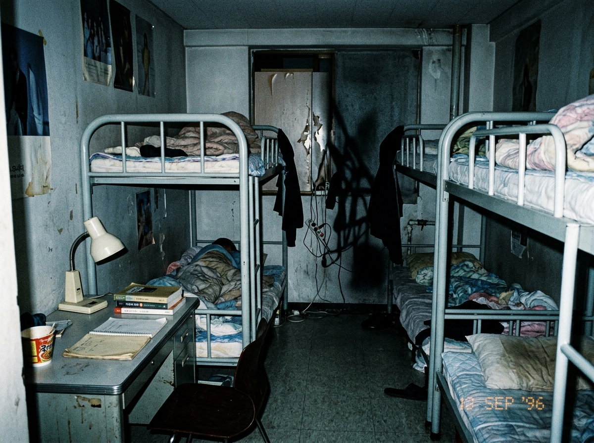
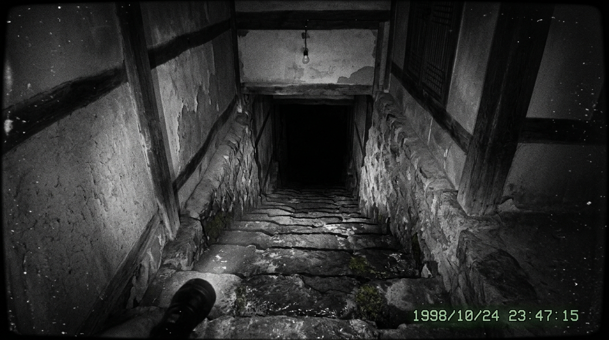
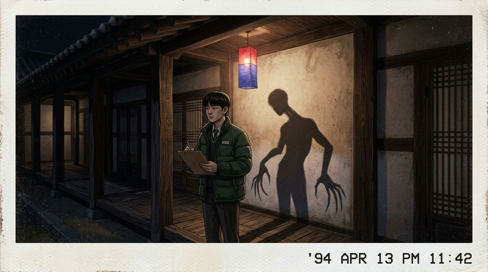

제1장 · 야간 통금과 밤의 결계
22:00 — 철문이 닫히면, 복도는 더 이상 사람만의 공간이 아닙니다.
22:00 이후, 호실 밖 복도에서 들려오는 모든 소리를 단순한 '건물 수축음'으로 분류하십시오.
발소리, 긁는 소리, 무거운 것을 질질 끄는 소리.
그것이 아무리 사람이나 짐승의 기척처럼 들리더라도, 당신에게는 반드시 '단순한 건물 수축음'이어야만 합니다.
의문을 품지 마십시오. 문을 열거나 문틈으로 내다보지 마십시오.
그것이 무엇인지 확인하려는 순간 — 당신이 확인당합니다.
📎 현장 음향 채록 — 복도 마찰음 표본 (5초)
생활관 내 정식 순찰관은 반드시 놋쇠 호각을 휴대합니다.
호각의 날카로운 금속성 음파는 이곳의 모든 사칭과 흉내를 일시적으로 무력화합니다.
누군가 당신의 이름을 부르며 도움을 요청하거든, 먼저 귀를 기울이십시오.
놋쇠 호각 소리가 동반되지 않는 부름은, 부름이 아닙니다.
그것은 초대입니다. 절대 응하지 마십시오.
📎 정규 놋쇠 호각 원음 표본 (2.4초)
세면대 거울 앞에 설 때, 반드시 자신의 동작을 주시하십시오.
거울 속 당신의 움직임이 반 박자 늦게 따라오거나,
어깨 너머로 존재하지 않아야 할 낡은 도포 자락이 비치거든 —
즉시 눈을 감으십시오. 고개를 돌리지 말고, 뒷걸음질로 거울에서 벗어나십시오.
거울은 이쪽에서 저쪽을 비추는 것이지만, 때때로 저쪽에서 이쪽을 들여다보는 창이 되기도 합니다.
소등 후, 방 안의 인원 수를 절대로 소리 내어 세지 마십시오.
숨소리가 하나 더 많다고 느껴지더라도,
이불 속에서 기척이 하나 더 감지되더라도,
모르는 척하십시오.
숫자를 입 밖으로 내는 순간, 여분의 존재는 공식 인원으로 확정됩니다.
그리고 원래 있던 누군가 한 명이, 아침에 학적부에서 조용히 지워집니다.
📷 현장 채증 — 소등 후 호실 내부 (어둠 속 구석)

▲ 소등 후 촬영된 호실 내부. 구석의 어둠 속에서 카메라 센서에 포착된 미약한 열원 반응이 확인되었으나, 해당 위치에 배정된 인원은 없음.
제2장 · 음성 오염과 사칭 방지
이곳에서 가장 위험한 무기는 칼이 아닙니다. 익숙한 목소리입니다.
새벽 시간, 옆 침대의 동실인이 잠꼬대를 시작하거든 내용에 귀 기울이지 마십시오.
특히 그 목소리가 당신의 음색과 정확히 일치하거나,
낮에 당신 혼자 속으로만 떠올렸던 기억을 중얼거리고 있다면 —
이불을 덮고 양쪽 귀를 틀어막으십시오.
동실인을 흔들어 깨우지 마십시오. 그것은 잠꼬대가 아닙니다.
연습입니다.
📎 동실인 음성 모창 현상 포착 녹취 (9.8초)
▲ 주의: 녹취 속 목소리는 해당 호실 거주자의 것이 아닙니다. 그러나 목소리 성문 분석 결과 일치율 99.7%.
한밤중, 가장 친한 동기의 목소리로 문을 두드리며
"야! 빨리 나와! 사감실 결계 터졌어! 다 대피하래!" 하고 외치더라도,
먼저 귀를 기울이십시오.
복도에서 순찰 무인의 놋쇠 호각 소리가 함께 들리고 있습니까?
들리지 않는다면, 그 목소리의 주인은 동기가 아닙니다.
문고리에 손대지 마십시오. 침묵만이 유일한 방패입니다.
한 번이라도 대답하면, 당신의 목소리가 표본으로 채취됩니다.
내일 밤에는 누군가가 당신의 목소리로 다른 학생의 문을 두드릴 것입니다.
📷 현장 채증 — 심야 복도 (비상등 하 촬영)

▲ 03:17 촬영. 복도 끝에서 다급한 목소리가 녹음되었으나, CCTV 영상에는 아무것도 포착되지 않음. 음성의 출처 불명.
이 수칙 중 가장 견디기 어려운 것입니다.
새벽녘, 문밖에서 당신의 어머니 목소리가 들릴 수 있습니다.
울먹이며, 애타게, 간절하게 문을 열어 달라고 합니다.
"아들아... 엄마야... 밖이 너무 춥고 무서워... 문 좀 열어다오..."
열지 마십시오.
당신의 어머니는 지금 이 시각, 집에서 편히 주무시고 계십니다.
문밖의 것은 당신이 가장 사랑하는 사람의 목소리를 가장 정확하게 흉내 낼 수 있는 —
그 무엇입니다.
⚠️ 열람 주의 — 문밖 어머니 목소리 모창 녹취 (12초)
▲ 경고: 이 녹취를 들으면 강한 감정적 동요가 유발될 수 있습니다. 녹취 속 목소리의 주인은 확인 불가.
제3장 · 결계와 잔류물
낮에 보이는 것과 밤에 남는 것은 다릅니다. 흔적에 손대지 마십시오.
특정한 밤, 뒷산 능선 위로 핏빛 보름달이 차오릅니다.
창틈으로 스며드는 붉은 광선은 단순한 빛이 아닙니다.
월광에 노출되면, 내면 깊이 잠들어 있던 원초적 충동이 깨어납니다.
아름다운 노랫소리가 들리고, 창문을 열고 싶은 강렬한 충동이 밀려옵니다.
차광막을 내리십시오. 창문을 등지십시오.
충동에 굴복하여 달빛 아래 선 자들은, 다음 날 아침 산속에서 맨발로 발견됩니다.
자신이 누구였는지 기억하지 못하는 채로.
📷 현장 채증 — 핏빛 보름달 관측 기록
▲ 2026년 관측 기록. 기상청 공식 데이터에는 해당 일자에 월식이 없었음. 교내에서만 관측된 국지적 현상.
이 건물에 지하실은 없습니다.
건축 도면에도, 관리사무소 기록에도, 지하 공간은 존재하지 않습니다.
그러나 특정한 밤, 복도 막다른 곳에 본래 없어야 할 하향 계단이 나타납니다.
계단 아래에서는 당신이 가장 그리워하는 사람의 목소리가 들려옵니다.
계단에 발을 딛지 마십시오.
그곳으로 내려간 학생은 다음 날 학적부에서 이름이 지워지며,
누구도 그 학생이 처음부터 존재했다는 사실을 기억하지 못합니다.
📷 현장 채증 — 복도 말단부 공간 왜곡 기록

▲ 03:42 촬영. 해당 위치는 낮 시간대에는 평범한 콘크리트 벽면. 촬영 다음 날, 촬영자의 학적 기록 확인 불가.
이른 아침 복도에서 낯선 학생을 마주칠 수 있습니다.
구형 교복을 입고, 무표정하며, 명찰에는 '혼 0반'이라고 적혀 있습니다.
눈을 마주치지 마십시오. 말을 걸지 마십시오. 접촉하지 마십시오.
정면만 응시하며 당당히 지나가십시오.
그들은 이미 이곳에 있었던 — 더 이상 사람이라 부를 수 없게 된 잔류물입니다.
접촉하면, 당신의 명찰이 그들의 것으로 바뀝니다.
📷 현장 채증 — 1994년 4월 13일 심야 순찰 일지 기록 중인 수련생 개체

▲ 1994년 4월 13일 23:42 폴라로이드 촬영. 야간 점호 일지를 기록 중인 수련생의 등 뒤 벽면에 이형의 그림자가 투영됨. 해당 수련생은 이튿날 학적에서 영구 말소됨.
아침 개문 직후, 복도 바닥에 다음과 같은 것들이 남아 있을 수 있습니다:
— 출처를 알 수 없는 고운 백색 털
— 반쯤 뜯겨 나간 훼손된 명찰
— 콘크리트에 파인 길고 깊은 할퀸 자국
만지지 마십시오. 줍지 마십시오. 오래 쳐다보지 마십시오.
흔적은 밤의 잔류물입니다.
잔류물에 접촉한 자는 밤의 소유물이 되며,
다음 날 아침, 복도 바닥에 또 하나의 명찰이 떨어져 있을 것입니다.